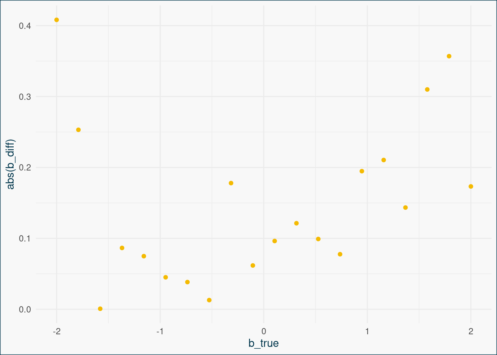

Stichprobenplanung durch Simulation: Vorbereitung
Übung
In dieser Übung wollen wir das Gründgerüst für die Simulation legen, indem wir erst einmal ohne Wiederholung ein Datensatz simulieren. Vieles wird dir vermutlich schon aus der Simulationsübung zu [Höher Parametrisierten Modellen] bekannt vorkommen.
Foto von Markus Spiske auf Unsplash
1 Das Grundgerüst
Als erstes wollen wir Schritt für Schritt das Grundgerüst für unsere Simulation aufbauen, das wir dann je nach Fragestellung erweitern können.
1.1 Die Items
Als erstes definieren wir unsere wahren Itemparameter, aus denen dann die Daten simuliert werden.
Erstelle dafür einen data.frame, der pro Item eine Zeile mit den entsprechenden Itemparamtern \(\alpha\), \(\beta\) und \(\gamma\) enthält.
- Wir wollen 20 Items simulieren.
- \(\alpha\) ist der Diskriminationsparameter und soll aus einer Normalverteilung \(N(1, 0.1)\) simuliert werden. So ist er noch klein genug, um ein sinnvolles 1PL-Modell ausprobieren zu können.
- \(\beta\) ist der Schwierigkeitsparameter und soll den gesamten erwartete Schwierigkeitsbereich abdecken. Die Range soll von -2 bis 2 gehen, und Itemschwierigkeiten in gleichmäßigen Abständen enthalten.
- \(\gamma\) ist der Rate-Parameter, und wird für alle Items auf 0 gesetzt.
1PL und 2PL Modelle sollten hier also beide gut funktionieren.
set.seed(42) ## Setze den gleichen Seed, um exakt die selben Ergebnisse zu bekommen
n_items <- 20 ## So kann ich die Itemzahl im Nachhinein leicht anpassen
n_sub <- 500
item_pars <- data.frame(
item_id = 1:n_items,
alpha = rnorm(n_items, 1, 0.1),
beta = seq(-2, 2, length.out = n_items),
gamma = rep(0, n_items)
)1.2 Die Antworten
Perfekt, jetzt können wir die Antworten simulieren. Nutze dafür diesmal die Funktion simIRT() aus catIrt. Andere Pakete wie mirt haben aber äquivalente Funktionen, und wir haben ja sogar schon gelernt, wie man das ganz manuell machen kann.
Wir müssen neben den Parametern auch die \(\theta\)-Werte angeben. Diese sollen aus einer Normalverteilung \(N(0,1)\) stammen. Hier haben wir natürlich Spielraum: Wenn wir erwarten, dass die Stichprobe, die wir untersuchen wollen, besonders leistungsstark ist, könnten wir auch eine Normalverteilung mit höherem Mittelwert wählen.
Wir simulieren in diesem ersten Schritt \(\theta\)-Werte für n_sub Personen. Später variieren wir das natürlich, um mehrere Möglichkeiten auszuprobieren.
1.3 Das Modell
Jetzt können wir das Modell schätzen. Wir geben uns jetzt erst einmal mit einem 1PL-Modell zufrieden. Fitte also ein 1PL-Modell auf die simulierten Daten (z.B. mit TAM).
Um an die simulierten Antworten zu kommen, können wir uns einmal die Struktur von dem simulierten Objekt anschauen:
str(sim_2PL_dat)List of 3
$ resp : num [1:500, 1:20] 0 1 1 1 1 1 1 0 0 1 ...
$ params: 'brm' num [1:20, 1:4] 1 2 3 4 5 6 7 8 9 10 ...
..- attr(*, "dimnames")=List of 2
.. ..$ : NULL
.. ..$ : chr [1:4] "item" "a" "b" "c"
$ theta : num [1:500] -0.307 -1.781 -0.172 1.215 1.895 ...Die responses können wir also mit sim_2PL_dat$resp extrahieren.
tam_1PL <- tam(sim_2PL_dat$resp, verbose = FALSE)1.4 Der Vergleich
Jetzt können wir unsere tatsächlichen Schwierigkeitsparameter mit den duch TAM geschätzten Schwierigkeitsparamtern vergleichen. Mach das einmal indem du die Differenz bildest. Fällt dir etwas auf?
Obwohl wir eigentlich ein 2PL Modell simuliert haben (wir haben ja Diskriminationsparamter verschieden von 1 gezogen), haben wir nur ein 1PL Modell gefittet. Das dient einfach dazu zu zeigen, dass die Modellschätzung in Fällen, in denen die Diskriminationsparamter nicht zu verschieden von 1 sind, hinreichend gut funktionieren kann. In echten Daten werden die Diskriminationsparamter ja auch nie 1 sein, deshalb können wir so mal schauen, wie sich unser Modell unter dieser Annahme von geringen Abweichungen von 1 verhält.
Der Output von TAM ist ziemlich groß. Beim Anschauen der Struktur sehen wir nach einigem Suchen, dass die Paramter sich wahrscheinlich in tam_1PL$item_irt verstecken:
str(tam_1PL)List of 57
$ xsi :'data.frame': 20 obs. of 2 variables:
..$ xsi : num [1:20] -2.41 -1.54 -1.58 -1.45 -1.08 ...
..$ se.xsi: num [1:20] 0.149 0.118 0.119 0.115 0.108 ...
$ beta : num [1, 1] 0
$ variance : num [1, 1] 1
$ item :'data.frame': 20 obs. of 6 variables:
..$ item : chr [1:20] "I1" "I2" "I3" "I4" ...
..$ N : num [1:20] 500 500 500 500 500 500 500 500 500 500 ...
..$ M : num [1:20] 0.886 0.784 0.79 0.772 0.712 0.68 0.642 0.606 0.53 0.536 ...
..$ xsi.item : num [1:20] -2.41 -1.54 -1.58 -1.45 -1.08 ...
..$ AXsi_.Cat1 : num [1:20] -2.41 -1.54 -1.58 -1.45 -1.08 ...
..$ B.Cat1.Dim1: num [1:20] 1 1 1 1 1 1 1 1 1 1 ...
$ item_irt :'data.frame': 20 obs. of 3 variables:
..$ item : chr [1:20] "I1" "I2" "I3" "I4" ...
..$ alpha: num [1:20] 1 1 1 1 1 1 1 1 1 1 ...
..$ beta : num [1:20] -2.41 -1.54 -1.58 -1.45 -1.08 ...
$ person :'data.frame': 500 obs. of 7 variables:
..$ pid : int [1:500] 1 2 3 4 5 6 7 8 9 10 ...
..$ case : int [1:500] 1 2 3 4 5 6 7 8 9 10 ...
..$ pweight: num [1:500] 1 1 1 1 1 1 1 1 1 1 ...
..$ score : num [1:500] 6 5 12 17 17 9 6 3 14 8 ...
..$ max : num [1:500] 20 20 20 20 20 20 20 20 20 20 ...
..$ EAP : num [1:500] -0.878 -1.112 0.428 1.601 1.601 ...
..$ SD.EAP : num [1:500] 0.479 0.489 0.466 0.515 0.515 ...
$ pid : int [1:500] 1 2 3 4 5 6 7 8 9 10 ...
$ EAP.rel : num 0.771
$ post : num [1:500, 1:21] 9.68e-18 1.44e-15 8.36e-33 5.40e-48 5.40e-48 ...
$ rprobs : num [1:20, 1:2, 1:21] 0.973 0.989 0.988 0.989 0.993 ...
$ itemweight : num [1:21, 1:20] 6.51e-06 1.86e-04 3.55e-03 4.40e-02 3.52e-01 ...
$ theta : num [1:21, 1] -6 -5.4 -4.8 -4.2 -3.6 ...
$ n.ik : num [1:21, 1:20, 1:2, 1] 6.45e-06 1.83e-04 3.42e-03 4.09e-02 2.99e-01 ...
$ pi.k : num [1:21, 1] 1.30e-08 3.72e-07 7.10e-06 8.81e-05 7.04e-04 ...
$ Y : num [1:500, 1] 1 1 1 1 1 1 1 1 1 1 ...
$ resp : num [1:500, 1:20] 0 1 1 1 1 1 1 0 0 1 ...
..- attr(*, "dimnames")=List of 2
.. ..$ : NULL
.. ..$ : chr [1:20] "I1" "I2" "I3" "I4" ...
$ resp.ind : num [1:500, 1:20] 1 1 1 1 1 1 1 1 1 1 ...
..- attr(*, "dimnames")=List of 2
.. ..$ : NULL
.. ..$ : chr [1:20] "I1" "I2" "I3" "I4" ...
$ group : NULL
$ G : num 1
$ groups : num 1
$ formulaY : NULL
$ dataY : NULL
$ pweights : num [1:500] 1 1 1 1 1 1 1 1 1 1 ...
$ time : POSIXct[1:2], format: "2024-10-21 10:49:11" "2024-10-21 10:49:11"
$ A : num [1:20, 1:2, 1:20] 0 0 0 0 0 0 0 0 0 0 ...
..- attr(*, "dimnames")=List of 3
.. ..$ : chr [1:20] "Item01" "Item02" "Item03" "Item04" ...
.. ..$ : chr [1:2] "Category0" "Category1"
.. ..$ : chr [1:20] "I1" "I2" "I3" "I4" ...
$ B : num [1:20, 1:2, 1] 0 0 0 0 0 0 0 0 0 0 ...
..- attr(*, "dimnames")=List of 3
.. ..$ : chr [1:20] "I1" "I2" "I3" "I4" ...
.. ..$ : chr [1:2] "Cat0" "Cat1"
.. ..$ : chr "Dim01"
$ se.B : num [1:20, 1:2, 1] 0 0 0 0 0 0 0 0 0 0 ...
..- attr(*, "dimnames")=List of 3
.. ..$ : chr [1:20] "I1" "I2" "I3" "I4" ...
.. ..$ : chr [1:2] "Cat0" "Cat1"
.. ..$ : chr "Dim01"
$ nitems : int 20
$ maxK : num 2
$ AXsi : num [1:20, 1:2] 0 0 0 0 0 0 0 0 0 0 ...
$ AXsi_ : num [1:20, 1:2] 0 0 0 0 0 0 0 0 0 0 ...
$ se.AXsi : num [1:20, 1:2] 0 0 0 0 0 0 0 0 0 0 ...
$ nstud : int 500
$ resp.ind.list :List of 20
..$ : int [1:500] 1 2 3 4 5 6 7 8 9 10 ...
..$ : int [1:500] 1 2 3 4 5 6 7 8 9 10 ...
..$ : int [1:500] 1 2 3 4 5 6 7 8 9 10 ...
..$ : int [1:500] 1 2 3 4 5 6 7 8 9 10 ...
..$ : int [1:500] 1 2 3 4 5 6 7 8 9 10 ...
..$ : int [1:500] 1 2 3 4 5 6 7 8 9 10 ...
..$ : int [1:500] 1 2 3 4 5 6 7 8 9 10 ...
..$ : int [1:500] 1 2 3 4 5 6 7 8 9 10 ...
..$ : int [1:500] 1 2 3 4 5 6 7 8 9 10 ...
..$ : int [1:500] 1 2 3 4 5 6 7 8 9 10 ...
..$ : int [1:500] 1 2 3 4 5 6 7 8 9 10 ...
..$ : int [1:500] 1 2 3 4 5 6 7 8 9 10 ...
..$ : int [1:500] 1 2 3 4 5 6 7 8 9 10 ...
..$ : int [1:500] 1 2 3 4 5 6 7 8 9 10 ...
..$ : int [1:500] 1 2 3 4 5 6 7 8 9 10 ...
..$ : int [1:500] 1 2 3 4 5 6 7 8 9 10 ...
..$ : int [1:500] 1 2 3 4 5 6 7 8 9 10 ...
..$ : int [1:500] 1 2 3 4 5 6 7 8 9 10 ...
..$ : int [1:500] 1 2 3 4 5 6 7 8 9 10 ...
..$ : int [1:500] 1 2 3 4 5 6 7 8 9 10 ...
$ hwt : num [1:500, 1:21] 9.68e-18 1.44e-15 8.36e-33 5.40e-48 5.40e-48 ...
$ like : num [1:500, 1:21] 1.89e-15 6.49e-12 6.61e-30 8.28e-43 8.21e-44 ...
$ ndim : num 1
$ xsi.fixed : NULL
$ xsi.fixed.estimated: num [1:20, 1:2] 1 2 3 4 5 6 7 8 9 10 ...
..- attr(*, "dimnames")=List of 2
.. ..$ : chr [1:20] "I1" "I2" "I3" "I4" ...
.. ..$ : chr [1:2] "" "xsi"
$ B.fixed.estimated : num [1:40, 1:4] 1 1 2 2 3 3 4 4 5 5 ...
$ beta.fixed : num [1, 1:3] 1 1 0
$ Q : NULL
$ variance.fixed : NULL
$ nnodes : num 21
$ deviance : num 10979
$ ic :'data.frame': 1 obs. of 19 variables:
..$ n : num 500
..$ deviance : num 10979
..$ loglike : num -5489
..$ logprior : num 0
..$ logpost : num -5489
..$ Nparsxsi : int 20
..$ NparsB : num 0
..$ Nparsbeta: int 0
..$ Nparscov : num 1
..$ np : num 21
..$ Npars : num 21
..$ ghp_obs : num 10000
..$ AIC : num 11021
..$ AIC3 : num 11042
..$ BIC : num 11109
..$ aBIC : num 11043
..$ CAIC : num 11130
..$ AICc : num 11023
..$ GHP : num 0.551
$ thetasamp.density : NULL
$ deviance.history : num [1:13, 1:2] 1 2 3 4 5 6 7 8 9 10 ...
..- attr(*, "dimnames")=List of 2
.. ..$ : NULL
.. ..$ : chr [1:2] "iter" "deviance"
$ control :List of 19
..$ nodes : num [1:21] -6 -5.4 -4.8 -4.2 -3.6 ...
..$ snodes : num 0
..$ QMC : logi TRUE
..$ convD : num 0.001
..$ conv : num 1e-04
..$ convM : num 1e-04
..$ Msteps : num 4
..$ maxiter : num 1000
..$ max.increment : num 1
..$ min.variance : num 0.001
..$ progress : logi FALSE
..$ ridge : num 0
..$ xsi.start0 : logi FALSE
..$ increment.factor : num 1
..$ fac.oldxsi : num 0
..$ acceleration : chr "none"
..$ dev_crit : chr "absolute"
..$ trim_increment : chr "half"
..$ mstep_intercept_method: chr "R"
$ irtmodel : chr "1PL"
$ iter : num 13
$ printxsi : logi FALSE
$ YSD : logi FALSE
$ CALL : language tam.mml(resp = resp, verbose = FALSE)
$ latreg_stand : NULL
$ prior_list_xsi : list()
..- attr(*, "dim_parameter")= int 20
..- attr(*, "is_prior")= logi FALSE
..- attr(*, "length_prior_entries")= int 0
$ penalty_xsi : num 0
- attr(*, "class")= chr "tam.mml"result <- data.frame(
"b_true" = item_pars$beta,
"b_est" = tam_1PL$item_irt[, "beta"]
) %>%
mutate(b_diff = b_est - b_true)
## Plotten der Differenz zwischen geschätzten und echten Parametern gegen die echten Parameter
ggplot(data = result, aes(x = b_true, y = abs(b_diff))) +
geom_point(color = "#F4BA02") +
theme_bg() 
Wir können vor allem anhand des Plots gut erkennen, dass die Differenz zwischen den wahren und den geschätzten Werten an den Rändern zunimmt. Besonders schwere oder besonders leichte Items werden also schlechter geschätzt. Das ist ganz normal, da dies Items relativ wenig Informationen enthalten: Entweder benantworten (fast) alle sie richtig oder (fast) alle sie falsch. Es gibt hier also wenig Variation, die für die Schätzung genutzt werden kann.
Im nächsten Schritt packen wir das alles in einen loop.